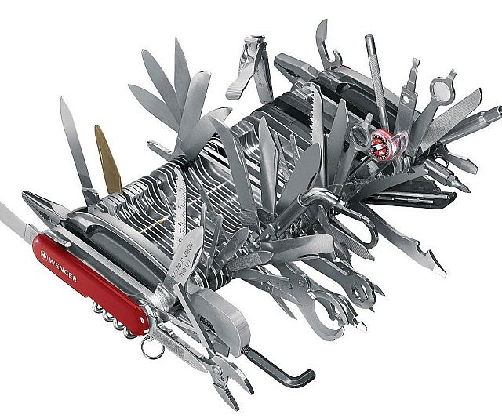

Ninja Cats
Conquer the world with the ultimate weapon.
Parts needed for weapon:
- Cat (Home-grown is OK)
- Drone
- Duct tape
Instructions will come in the mail.

Check this one out. Checkmate.
Never lose track of where you are in a book.
Sometimes the easiest solutions really are the intelligentist smartest solution. Just take some mustard and squirt it onto the page before where you just read. (Relish works as well)

The Ultimate Swiss Army Knife by Wenger ®
For the person who needs a lot of tools and only one pocket to store them in.
